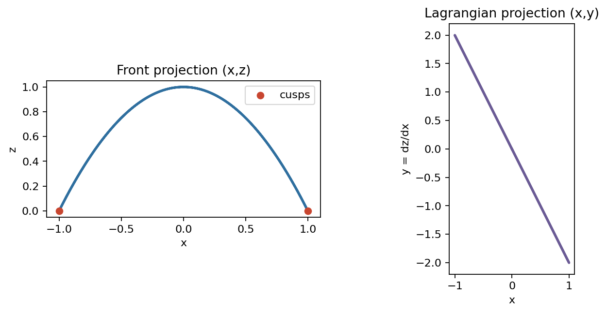

Contact geometry adds incidence data to an ordinary knot: does the curve lie in the contact planes, or cut through them with a chosen sign?
For a cooriented contact structure \(\xi=\ker\alpha\), a knot \(K\) is Legendrian when \(T K\subset \xi\).
A knot is positive transverse when \(\alpha(\gamma'(t))>0\) everywhere; negative transverse uses the opposite sign.
\(\alpha_{st}=dz+x\,dy,\qquad \alpha_{st}(\gamma')=z'+x\,y'.\)
A small tubular neighborhood has torus boundary. A nonzero normal vector field along \(K\) gives a parallel copy \(K'\) on that boundary.
For a Legendrian \(K\), choose a vector field inside \(\xi\) and transverse to \(K\). Its two oriented choices produce nearby transverse knots \(K_+\) and \(K_-\).
The linking number of \(K\) with a contact-defined copy measures how the contact framing twists relative to a surface framing.
\(\alpha_{st}=dz+x\,dy,\qquad \gamma_F=(y,z),\qquad \gamma_L=(x,y).\)
Legendrian: \(z'+x\,y'=0\).
Positive transverse: \(z'+x\,y'>0\).
The chapter notebook uses \(\alpha=dz-y\,dx\) and front coordinates \((x,z)\). Translate by swapping the horizontal coordinate and adjusting signs.
\(\gamma_F=(y,z),\qquad x=-{z'\over y'}=-{dz\over dy}.\)
Thus a front is not merely a shadow: away from cusps it encodes the Legendrian lift.
The approved JSON check records \(tb=-1\), rotation \(0\), and contact residual \(<10^{-2}\) for the standard unknot model.

Figure reuse note: this local artifact was generated with \(\alpha=dz-y\,dx\), front \((x,z)\). In this deck, read the front rule through the source convention \(\alpha_{st}=dz+x\,dy\), front \((y,z)\).
\(\gamma_L=(x,y),\qquad z(s_1)=z(s_0)-\int_{s_0}^{s_1}x(s)y'(s)\,ds.\)
\(\hbox{closed Legendrian lift}\quad\Longleftrightarrow\quad \int_\gamma x\,dy=0.\)
Signed lobes in the Lagrangian projection must cancel for the lift to close in \(z\).
\(z'(t)+x(t)y'(t)>0\quad\hbox{for every }t.\)
Unlike a Legendrian front, a transverse front is checked together with a chosen \(x\)-lift. Crossings and tangencies are acceptable only when the lift keeps the same contact sign.
A projected smooth tangency is not automatically bad. The forbidden event is a tangent direction that actually lands in \(\xi\), making \(\alpha_{st}(\gamma')=0\).
After an arbitrarily small \(C^0\) perturbation, a smooth curve can be replaced by a Legendrian curve with the same coarse route through the manifold.
In a Darboux chart, subdivide the visible arc and replace each short segment by a front arc whose slope supplies the required \(x\)-coordinate.
Choose a common subdivision, solve the endpoint matching problem on each small block, and insert a standard two-cusp front where the tangent needs correction.
The local zig-zag is not a decorative wrinkle; it is the mechanism that changes the slope without leaving the small chart.
On \(\partial\nu K\), a longitude follows \(K\), while a meridian \(\mu\) bounds a disk in the tubular neighborhood.
\([K']-[\lambda]=n[\mu]\quad\Rightarrow\quad [K']=n[\mu]\ \hbox{in the complement quotient.}\)
The integer \(n\) becomes the linking number once orientations are fixed.
\(\operatorname{lk}(K,K')=K'\cdot \Sigma,\qquad \partial\Sigma=K.\)
Each intersection contributes \(+1\) or \(-1\) according to whether the ordered tangent data agrees with the ambient orientation.
If \(K'\) is the contact push-off, this same integer measures how the contact framing twists relative to the surface framing.
\(\operatorname{lk}(K,K')={1\over 2}\sum_{c\in K\cap K'}\epsilon(c).\)
For a close push-off, one may count the signed crossings where the push-off passes under the original knot, using the same crossing-sign convention.
For an oriented Legendrian knot \(K\) bounding \(\Sigma\), \(tb(K,\Sigma)\) is the linking number of \(K\) with a push-off determined by the contact framing.
\(tb(K,\Sigma)=\operatorname{lk}(K,K_{\xi})=\operatorname{fr}_{\xi}-\operatorname{fr}_{\Sigma}.\)
Contact planes provide a ribbon along \(K\). The surface provides another ribbon. \(tb\) counts their relative twisting.
\(tb(K)=\operatorname{writhe}(K_F)-{1\over 2}\#\operatorname{cusps}(K_F).\)
\(rot(K)={1\over 2}(c_- - c_+).\)
\(tb(K)=\operatorname{writhe}(K_L).\)
The rotation formula depends on orientation and cusp-sign convention; this deck uses the source-model convention fixed earlier.
Table values come from `../checks/front-invariant-calculator.json`; the standard unknot also matches `legendrian-unknot-front-invariants.json` with contact residual \(<10^{-2}\).
\(tb(K,\Sigma)+|rot(K,[\Sigma])|\le -\chi(\Sigma).\)
\(tb(K)+rot(K)\equiv 1\pmod 2.\)
For a disk-bounding unknot, \(-\chi(D^2)=-1\). The maximal point is \((-1,0)\), and stabilizations move diagonally down.
For a null-homologous transverse knot \(T\), \(sl(T,\Sigma)\) is the linking of \(T\) with a nonzero section of \(\xi|_\Sigma\) pushed along the boundary.
\(sl(K)=\operatorname{writhe}(\hbox{front}).\)
\(sl(K_\pm,\Sigma)=tb(K)\mp rot(K,[\Sigma]).\)
The sign in \(tb\mp rot\) follows the chosen positive and negative transverse push-off convention.
For the front shown, record \(w\), \(c_+\), \(c_-\), then compute \(tb\), \(rot\), \(sl(K_+)\), and \(sl(K_-)\) using the convention fixed in the deck.
\(tb=w-\#\operatorname{cusps}/2,\qquad rot=(c_- - c_+)/2.\)
\(sl(K_\pm)=tb\mp rot,\qquad sl(\hbox{transverse front})=w.\)